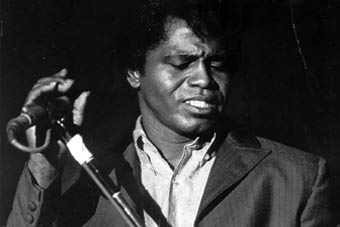

Concrete and Clay
Shop
HAPPY HOLIDAYS
Happy Holidays to one and to all!
#27 December 2006 | Comments (2)
GOOD TIMES ON TAP

DJ Drinks.
Found Sound.
Cafe 1001, Dray Walk, off Brick Lane.
Wednesday 27th December, 7pm-12am.
FREE.
#26 December 2006 | Comments (1)
REST IN PEACE

#26 December 2006 | Comments (3)
MELBOURNE ACADEMY
Podcasts from the Red Bull Music Academy in Melbourne.
#24 December 2006 | Comments (0)
PLAY HOLIDAY
#19 December 2006 | Comments (0)
OUPUT
Final recordings from the now defunct OUPUT label, available now for free download. Collect them while you can: Output mp3.
#19 December 2006 | Comments (0)
CHRISTMAS CHEER TO ALL READERS
{kind=link}
Baa humbug
#15 December 2006 | Comments (2)
THE HUMANE DISPOSAL OF RODENTS II
Having caught the little critter (or rather, having placed the glue trap in a corner of my room for what must have been months), I felt a rush of shame and remorse running through my person. I hadn't noticed him at first, but tiny squeaky sounds alerted me to his presence. Sure enough, he was stuck. Having consulted Reakes about my options, I thought the best thing would be to take him outside and crush him with a brick taken from the construction site next door.
I just couldn't do it.
He's slowly fading away now, in a Carphone Warehouse paper bag, alone, in the wind. Goodbye my little friend. Godspeed.
#13 December 2006 | Comments (1)
STYLE WARS
Full 1983 New York graffiti documentary Style Wars, at google video.
#11 December 2006 | Comments (1)
PUT YOUR EAR ON THE RAIL OF HISTORY
Werner awoke, scratched his balls and pulled the covers back over his face. It was January 30th. The frost on the windows was now on the inside of his room. He knew that he would have to get up soon, but resisted for as long as he could until he could take the pain of his overfull bladder no more. His sloping shoulders barely holding up his head, he traipsed slowly across the room, narrowly avoiding the cat that had crept in and curled up at the edge of the bed.
On his return, feeling marginally better, Werner slowly dressed and made his way to the kitchen to grab a coffee before heading out. The streets were still quiet this morning and this pleased Werner, the last thing he wanted was the bustle of the early commuters heading into Hamburg hassling him, turning their noses up at him. He also knew that he had to complete his task as surreptitiously as possible.
Armed with a small brush and a pot of black paint, Werner quickly set to his work. He wrote "leg dein ohr auf die schiene der geschichte" - put your ear on the rail of history. But it was too late. History was already in the making. January 30 1933.
#04 December 2006 | Comments (4)